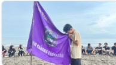

Informasi Biodata Lengkap
| Nama Lengkap: | Nayla Azzahra R |
| Program Studi: | Teknik Komputer |
| Kelas / Angkatan: | Kelas C / 2025 |
| Mata Kuliah: | Praktikum Pemrograman Web |
| Fokus Minat: | Web Design, Jaringan Komputer & IoT |
| Hobi Utama: | Seni Tari Tradisional Nusantara (Traditional Dance) |
| Organisasi: | LPM Penalaran UNM & JTIK (Nexus 2025) |
| Platform Koding: | HTML5, CSS3, Visual Studio Code, Git, GitHub Pages |
03. Pengalaman Organisasi Mahasiswa
Aktif mengembangkan kapasitas diri, kepemimpinan, dan jejaring relasi melalui keterlibatan aktif dalam beberapa organisasi:
- Himpunan Pelajar Mahasiswa Massenrempulu (HPMM): Organisasi kedaerahan pelajar & mahasiswa Kabupaten Enrekang.
- LPM Penalaran UNM: Lembaga penalaran dan riset ilmiah mahasiswa tingkat Universitas Negeri Makassar.
- Anggota Formal JTIK (NEXUS 2025): Lembaga kemahasiswaan Jurusan Teknik Informatika dan Komputer FT-UNM.




04. Hobi: Seni Tari Tradisional
Selain aktif dalam dunia akademik dan pemrograman web, saya memiliki kegemaran dan bakat dalam Seni Tari Tradisional Nusantara. Olahraga seni ini melatih kelenturan fisik, ritme, keanggunan, kerja sama tim, dan semangat pelestarian budaya bangsa.


Visi & Minat Akademik
Dunia teknologi dan rekayasa komputer terus berkembang pesat. Saya memiliki antusiasme tinggi untuk terus mengasah keterampilan teknis, memahami arsitektur sistem komputasi, serta mengeksplorasi pembuatan website yang interaktif dan responsif.
Dengan memadukan logika pemrograman web dan estetika desain visual, saya berusaha menghasilkan antarmuka pengguna yang bersih, modern, dan nyaman diakses di berbagai ukuran layar perangkat.
Target & Peta Rencana 2-3 Tahun Kedepan
Rencana strategis pengembangan diri, kompetensi teknis, serta pencapaian akademik dan karier di bidang Teknik Komputer:
Eksplorasi Teknologi Web & Arsitektur Komputer
Mendalami teknologi web modern secara mendalam (HTML, CSS, JavaScript, serta framework modern) dan memperkuat pemahaman logika algoritma pemrograman serta mikrokontroler.
Implementasi Proyek & Kompetisi IT
Membangun proyek sistem informasi berbasis jaringan dan aktif mengikuti berbagai kompetisi / kejuaraan di bidang IT untuk menguji kemampuan serta membangun rekam jejak portofolio nyata.
Magang Industri & Penyelesaian Tugas Akhir
Mengikuti program magang industri bersertifikat di perusahaan dan menyelesaikan tugas akhir Teknik Komputer yang inovatif serta memberikan dampak nyata dan bermanfaat bagi masyarakat luas.
Pembelajaran Praktikum Web
Penerapan materi praktikum yang telah saya kuasai dan implementasikan ke dalam portofolio ini mencakup:
- Modul 3: Struktur dasar CSS, Selector HTML (redefinisi tag), Selector Class, Selector ID, serta mekanisme CSS Inline, Internal, dan Eksternal.
- Modul 4: Pengaturan gambar (border warna, dimensi width & height, background repeat & attachment, serta transparansi opacity dan hover).
- Modul 5: Perancangan navigasi horisontal, navigasi vertikal, dan struktur tata letak 2 kolom serta 3 kolom sejajar.
- Modul 6: Implementasi navigasi dropdown bertingkat dengan linear-gradient pink, border-radius melengkung, serta efek transisi yang halus.